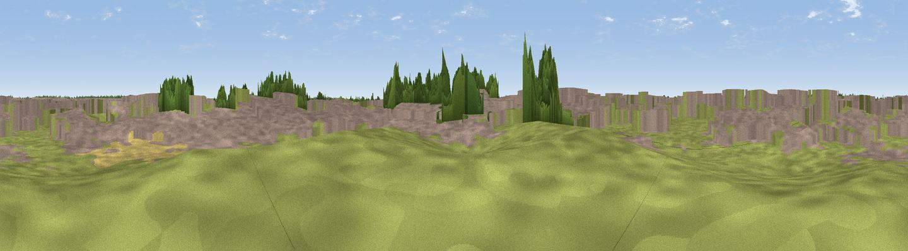

Viewpoint near Takeley Street
#44983 in England · top 64% of its area beats it · near Takeley StreetThe view, rendered

A 360° render of this exact spot computed from the terrain model, tree cover and land cover — summer colours, afternoon light, calibrated against photographs of famous viewpoints. Real trees, hedges and buildings will differ in detail.
The panorama
Grey silhouette: terrain skyline in each direction (720 bearings, Earth curvature and refraction included). Dashed green: skyline with trees (+15 m) and buildings (+8 m) as obstacles. Blue strip: how far the ground is visible on each bearing.
Where the view opens
Wedge length = distance to the farthest visible ground on that bearing (vegetation-aware). Rings at 10, 25 and 50 km.
What fills the view
46% built-up · 39% grassland · 8% cropland · 7% woodland
Angular shares of the visible panorama (visual magnitude), not map area. Landscape diversity 0.49 (0–1 Shannon).
Key numbers
More beautiful places nearby
The staircase of upgrades: each row has a higher view potential than everything closer. Driving times are estimates from straight-line distance, calibrated against real road routing — check an actual route before setting out.
| Place | Direction | Drive | Score |
|---|---|---|---|
| Lovecotes Hill | NNE · 7 km | ~15 min | 23.8 |
| Viewpoint near Littlebury | N · 16 km | ~28 min | 26.0 |
| Sewards End Hill | NNE · 17 km | ~29 min | 27.1 |
| Rye Hill | SSW · 18 km | ~31 min | 29.2 |
| Viewpoint near Great Amwell | WSW · 19 km | ~32 min | 30.8 |
| Cambridgeshire County Top | NW · 20 km | ~34 min | 33.1 |
| Viewpoint near Thundridge | WSW · 21 km | ~35 min | 40.8 |
| Viewpoint near Heydon | NNW · 21 km | ~35 min | 50.0 |
51.88034, 0.23863 · source: osm viewpoint · position refined by local search. Computed location — check access rights before visiting.